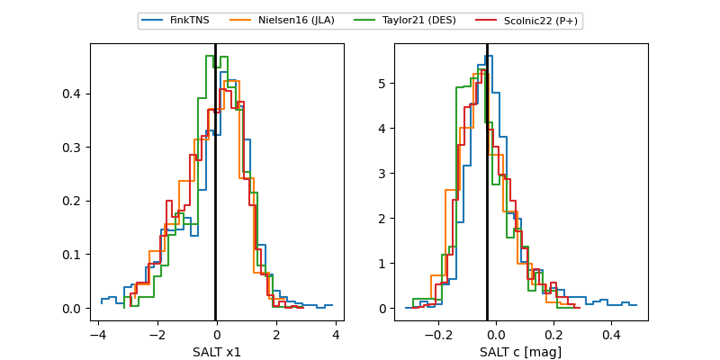

FINK: ZTF25aboyxot
Lasair: ZTF25aboyxot
ALeRCE: ZTF25aboyxot
ZTF25aboyxot (ztf,fink)
equatorial (ra, dec) = (61.5104,+25.95452)
galactic (l, b) = (168.5589,-19.21415)

last atlasc=18.70, atlaso=18.42, ztfg=18.83, ztfr=18.37
2 atlasc, 4 atlaso, 6 ztfg, 6 ztfr detections